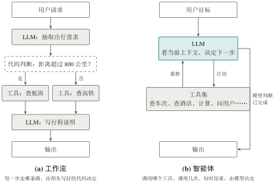
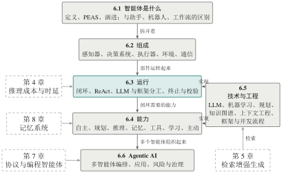

6.1 智能体是什么
“智能体”这个词被用得很宽：客服机器人、编程助手、自动化流程，都有人叫它智能体。本节先给出一个可以检验的定义——智能体是处在环境之中、能自主感知并采取行动以实现目标的系统，再用 PEAS 框架把一个任务描述清楚；然后沿“决策依据从哪里来”这条线回顾智能体的演进；最后把智能体与聊天机器人、AI 助手、工作流逐一区分开。结论是：区分它们的关键不是用没用大模型，而是由谁决定下一步做什么。
6.1.1 定义与四个要件
英文 agent 兼有“代理人”“执行者”的意思。在人工智能里，一个被广泛采用的定义来自 Russell 与 Norvig 的教材[1]：智能体是处在某个环境之中、通过传感器感知环境、通过执行器作用于环境的系统；在此基础上，它能自主地选择行动以实现目标。国内教材常用的表述更突出能力：智能体是具备自主感知、决策和执行任务能力的智能系统。两种说法都包含四个要件，以差旅规划智能体为例：
环境（environment）：智能体之外、它要感知和改变的一切。对差旅智能体而言，环境包括车次与航班数据库、酒店库存、公司报销系统，以及用户本人。
感知（perception）：获取环境状态的手段。软件智能体的“传感器”是 API（应用程序编程接口）返回的数据、网页、文档和用户消息；机器人的传感器是摄像头、激光雷达、麦克风。
行动（action）：改变环境的手段。软件智能体的行动是调用接口、写入数据库、发送消息；机器人的行动是移动、抓取。
自主性（autonomy）：没有人逐步下指令时，自己决定“下一步做什么”。这是智能体与普通程序的分界：一个按固定脚本依次调用三个 API 的程序不是智能体，因为每一个分支都是人预先写好的。
LLM 时代的智能体在经典定义之外多了一个特征：以自然语言为接口、以语言模型为决策核心。这带来一个实质差别。经典智能体的知识由设计者以规则、状态模型或奖励函数显式写出，能力边界窄而清楚；LLM 智能体的知识隐含在参数里，覆盖面极广，却说不清边界在哪里，也难以逐条验证。本章后面讲的工具校验、记忆、反思、人工确认等机制，很大一部分就是为了给后者补上可验证性。
用 PEAS 描述任务 动手实现之前，先要把任务说清楚。Russell 与 Norvig 提出用 PEAS 四个维度描述一个智能体任务[1]：性能度量（Performance measure，怎样算做得好）、环境（Environment，在什么环境中工作）、执行器（Actuators，能做什么）和传感器（Sensors，能感知什么）。它与上面的四个要件是两个角度：四个要件说明“什么样的系统算智能体”，PEAS 是动手设计时填写的任务说明书，其中环境、执行器（行动）、传感器（感知）与要件一一对应，性能度量则给出自主决策要追求的目标。PEAS 中最常被跳过的是性能度量：如果系统无法判断自己是否已经完成任务，它要么无休止地循环，要么过早停止。差旅智能体的性能度量可以是“总花费不超预算”“方案可执行”“用户修改次数少”，三者常常互相冲突，需要定出优先级。
表 6-1 用 PEAS 对照了四个典型任务。环境一栏使用了几组描述环境性质的术语：能否看到全部状态（完全可观测/部分可观测）、同一动作结果是否唯一（确定/随机）、智能体思考时环境是否会变（静态/动态）、状态与动作是否连续，以及是否有其他智能体参与。这些性质决定了技术选型：完全可观测、确定、静态的数学题，一次工具调用就能解决；部分可观测、动态、有多方参与的差旅规划，则需要记忆、重新规划和人工确认。第 6.2.4 小节还会回到这些性质。
表 6-1 典型智能体任务的 PEAS 描述
| 任务 | 性能度量 P | 环境 E | 执行器 A | 传感器 S |
|---|---|---|---|---|
| 数学解题 | 答案正确率、步骤可核验 | 完全可观测、确定、静态 | 计算器、符号求解器、代码解释器 | 题目文本、工具返回值 |
| 代码修复 | 测试通过率、改动最小 | 部分可观测、确定、静态 | 读写文件、执行命令、运行测试 | 仓库结构、报错信息、测试输出 |
| 差旅规划 | 不超预算、方案可行、用户满意 | 部分可观测、随机、动态、多方参与 | 查询、预订、改签、通知 | 用户消息、日历、库存与价格 |
| 仓储搬运 | 吞吐量、碰撞率、能耗 | 部分可观测、随机、动态、连续 | 底盘运动、机械臂、升降 | 激光雷达、摄像头、力传感器 |
6.1.2 从规则到大模型：智能体的演进
回顾智能体的演进，最清楚的线索是决策依据从哪里来。Russell 与 Norvig 按内部结构把经典智能体分为五类[1]，它们大致对应历史上先后成为主流的几个阶段（表 6-2）。
规则驱动 早期智能体的行为由“如果……那么……”规则决定。最简单的是简单反射型智能体（simple reflex agent），只看当前输入，按规则直接给出动作。专家系统把这一思路推到极致：20 世纪 70 年代斯坦福大学的 MYCIN 用约 600 条由专家录入的规则辅助诊断血液感染（停留在研究阶段，未投入临床使用）；更早的 ELIZA（1966 年，麻省理工学院）用模式匹配进行对话，其中的 DOCTOR 脚本模拟心理治疗师。规则系统可解释、可审计，问题是知识获取瓶颈：每多一种情形就要多写规则，规则一多就互相冲突。今天的机器人流程自动化（RPA）仍沿用这一思路，把边界清楚的重复操作写成固定流程。
基于模型 只看当前输入，环境稍有变化就会失效。基于模型的反射型智能体（model-based reflex agent）在内部维护一个关于世界的模型，用它推断看不见的部分现在是什么状态，再据此行动。扫地机器人看不到沙发底下，但能根据地图和已清扫区域推断哪里还没扫。这一阶段的关键词是状态估计：智能体回应的不再是当前输入，而是“它相信的世界状态”。
目标与效用导向 任务变复杂后，智能体需要知道“要去哪里”并比较“哪条路更好”。目标导向智能体（goal-based agent）以目标是否达成为准则，用搜索与规划算法找出动作序列；效用导向智能体（utility-based agent）再用一个效用函数给不同结果打分，在多个都能达成目标的方案之间权衡。差旅智能体属于后者：坐飞机和坐高铁都能到上海，但高铁准点、飞机快却有延误风险，没有效用函数就无法按用户偏好取舍。
学习型与 LLM 智能体 学习型智能体（learning agent）在上述结构上增加“学习元件”和“评判元件”：评判元件对行为结果给出反馈，学习元件据此改进决策。2022 年 10 月以预印本发布、2023 年发表于 ICLR 的 ReAct[2]把语言模型放进“思考—行动—观察”的循环；2023 年 3 月发布、同年发表于 NeurIPS 的 Reflexion[3]让模型在失败后用文字总结教训、供下次参考，后者正是“评判—改进”结构的语言版本。与前几代相比，LLM 智能体的变化不在于多了某个部件，而在于具体情形下“该怎么做”的判断，第一次大量地由预训练模型给出。这带来了泛化能力，也降低了可验证性。
在 LLM 之上，当前智能体还表现出几项新特征[4]：借助视觉语言模型（Vision-Language Model，VLM）处理截图、图表等多模态信息；通过少量示例和上下文学习（在提示中给出示例、不改参数）快速适应新任务；调用外部工具扩展行动能力；用记忆与反思积累经验；以及模拟性格、情感，在多个智能体之间进行社交式互动[6]。
表 6-2 智能体演进的几个阶段
| 阶段 | 决策依据 | 代表技术 | 优势 | 局限 |
|---|---|---|---|---|
| 规则驱动 | 人工编写的规则 | 专家系统、模式匹配、RPA | 可解释、可审计 | 知识获取瓶颈，难以应对开放情形 |
| 基于模型 | 内部世界模型与状态估计 | 贝叶斯滤波、地图构建 | 能处理部分可观测 | 建模成本高，模型误差会累积 |
| 目标/效用导向 | 目标、效用函数与搜索 | 启发式搜索、经典规划、MDP | 能做多步权衡，有理论保证 | 需要形式化建模，开放领域难用 |
| 学习型/LLM | 预训练参数、上下文与反馈 | 强化学习、ReAct、工具调用、反思 | 泛化强，自然语言接口 | 幻觉、成本高、难以验证 |
演进不等于替代。可靠的智能体系统往往是几代技术的混合：用规则划定安全边界，用状态模型记录任务进度，用规划算法排出日程，用 LLM 理解语义和处理例外情况。
6.1.3 智能体、AI 助手与聊天机器人
日常说法里，“智能体”“AI 助手”“聊天机器人”常被混用。三者确有交集，但在目标、自主性和交互方式上可以分开（表 6-3，据 Google Cloud 的划分[7]整理）。
聊天机器人（chatbot）的目标是自动化简单任务或对话：响应用户的触发，按预设流程或检索到的知识回复。用户问“怎么退货”，它返回退货政策；用户说“转人工”，它转接。AI 助手（AI assistant）协助用户完成任务：理解与生成能力更强，能起草文档、总结会议、推荐操作，但采纳与否由用户决定，编程助手给出的代码补全就是如此。智能体则自主、主动地执行任务：用户给出目标而不是步骤，它自己拆解、执行、检查，遇到障碍时调整策略。
表 6-3 智能体、AI 助手与聊天机器人的比较
| 维度 | 智能体 | AI 助手 | 聊天机器人 |
|---|---|---|---|
| 目标 | 自主、主动地执行任务 | 协助用户完成任务 | 自动化简单任务或对话 |
| 能力 | 执行复杂多步操作；学习与适应；独立决策 | 响应请求；提供信息、完成简单任务；可推荐行动，由用户决定 | 响应请求或触发；按预设流程提供信息 |
| 交互模式 | 主动的、目标导向的 | 被动响应用户请求 | 被动响应触发器或命令 |
| 自主性 | 最高，能独立操作和决策 | 较低，需要用户输入和指导 | 最低，通常遵循预编程规则 |
| 适用复杂度 | 复杂任务与工作流 | 较简单的任务与交互 | 最简单的任务与交互 |
| 学习能力 | 常借助机器学习持续改进 | 可能具备一定学习能力 | 很少或没有 |
| 对什么负责 | 任务是否完成 | 建议是否有用 | 回复是否得体 |
表中最后一行是更本质的差别——责任边界。聊天机器人对“回复是否得体”负责，AI 助手对“建议是否有用”负责，智能体对“任务是否完成”负责。
从 RAG、Copilot 到 Agent 2023 年前后，大模型应用大致经历了三种形态：检索增强生成（RAG，先检索资料再回答，见第 5.2 节）、Copilot（把模型嵌进具体软件，在用户的操作上下文里生成补全或建议，由用户逐条采纳的“副驾驶”）和 Agent。这一过渡常被概括为从“以人为主、AI 辅助”到“以 AI 为主、人为辅助”。这句话容易被误读为“人退出流程”，更准确的说法是人的角色从操作者变成委托人：在 RAG 阶段，人决定问什么、怎么用检索结果；在 Copilot 阶段，人决定接受哪条建议；在 Agent 阶段，人设定目标、约束和验收标准，路径由系统决定，人只在关键节点确认或否决。用户只需用自然语言描述目标；系统内部由模型做出的判断，依据的是以提示形式组织起来的系统提示、工具说明和记忆片段（控制流与工具执行仍由代码承担）。因为模型侧的行为几乎全部由提示塑造，有人把智能体称为“提示词应用的巅峰”；这只是一种形象说法，智能体的可靠性同样依赖代码中的校验与控制（第 6.3.3 小节）。
人不再逐步监督之后，系统必须自己回答三个问题：怎么知道做对了？做错了怎么发现？发现后怎么回退？它们分别对应第 6.3.4 小节的校验与终止、第 6.5.8 小节的评估、第 6.6.5 小节的治理。授予系统的自主权越大，工程上要补的东西越多。
辨析
“聊天机器人”“AI 助手”“智能体”是按自主性与责任划分的角色，不是按底层技术划分的。同一个大模型，接上固定问答流程就是聊天机器人，只给建议就是助手，被授权自行调用工具完成任务才是智能体。反过来，产品名里带 Agent 的，未必真的由模型决定下一步。
6.1.4 智能体与工作流
同样是“LLM + 工具”，系统可以有两种组织方式。Anthropic 在 2024 年的工程总结中给出了一个常被引用的区分[8]：工作流（workflow）是由预先写好的代码路径编排 LLM 和工具的系统；智能体是由 LLM 动态决定自己的执行过程和工具使用的系统。区别在于控制流由谁掌握（图 6-1）。

图 6-1 工作流与智能体的控制流。灰色框为模型或工具调用，虚线框为代码中的条件判断；(b) 中的循环次数事先不确定
工作流里，模型只负责某个节点内的事，例如“把用户需求抽取成 JSON”或“写一段行程说明”；走哪条分支、调用几次、何时结束，都写在代码里。常见的工作流模式有五种[8]：提示链（前一步的输出作为后一步的输入）、路由（先分类，再交给对应的处理流程）、并行化（把子任务同时交给多个调用，再汇总或投票）、编排者—执行者（一个模型临时拆分任务、分派给其他调用，这是工作流中最接近智能体的一种）和评估者—优化者（一个模型生成，另一个模型评价并要求修改）。智能体则把“下一步做什么”交给模型：模型看到工具返回的结果后决定继续查、换个工具，还是结束。
表 6-4 工作流与智能体的对比
| 维度 | 工作流 | 智能体 |
|---|---|---|
| 控制流 | 写在代码里，路径预先确定 | 由 LLM 在运行时决定 |
| 适合的任务 | 步骤固定、可预先拆分 | 步骤数和路径难以预知 |
| 可预测性 | 高，便于测试、审计 | 较低，同一输入可能走不同路径 |
| 成本与时延 | 调用次数固定，可预估 | 调用次数随任务变化，可能较多 |
| 出错方式 | 遇到没设计到的情形就失败 | 可能自行绕过障碍，也可能走偏、不停 |
两者的取舍（表 6-4）可以归结为一条原则：能用工作流解决的，先用工作流；只有当路径确实无法预先写出、且错误可以被发现和纠正时，才把控制权交给模型。差旅规划中，“抽取需求—查报销制度”可以写成固定工作流；“车次售罄就换航班、超预算就换酒店、改期后重排”这类分支太多，适合交给智能体。实际系统常是二者的组合：外层是工作流，某些节点内部是一个小智能体。第 4 章第 4.5 节在讨论应用编排时也给出了同样的建议。
辨析
“智能体与工作流”讨论的是控制流由谁决定，与是否使用图形化编排工具无关。用 LangGraph 一类框架画出的“图”，如果每条边都由代码条件决定，就是工作流；如果某个节点让模型自己选择下一个节点，那一部分才是智能体。
6.1.5 本章的知识地图
图 6-2 给出本章各节之间的关系：先定义智能体（第 6.1 节），再拆开看它由什么组成（第 6.2 节），组件如何在闭环里运转（第 6.3 节），闭环需要哪些能力（第 6.4 节），能力由哪些技术支撑（第 6.5 节），最后把多个智能体组织成系统（第 6.6 节）。阅读时可以随时回到这张图确认当前位置。

图 6-2 本章知识地图。中列为本章各节，黑色箭头表示各节的先后关系；右侧第 6.5 节为第 6.3、6.4 节提供技术实现；两侧虚线框为展开相关细节的其他章，灰色箭头指向引用它们的位置